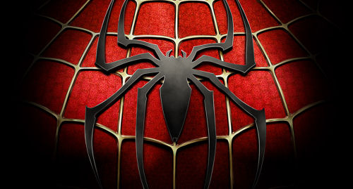

Peter Parker
Peter Parker è un ragazzo di New York che acquisisce poteri dopo essere stato morso da un ragno radioattivo.
La sua vita cambia drasticamente, passando da un adolescente introverso a un eroe dotato di incredibili capacità fisiche e sensoriali.
La morte di suo zio Ben, che gli insegna la lezione fondamentale "Da un grande potere derivano grandi responsabilità", è il punto di svolta che trasforma Peter in Spider-Man, l'eroe che conosciamo oggi.